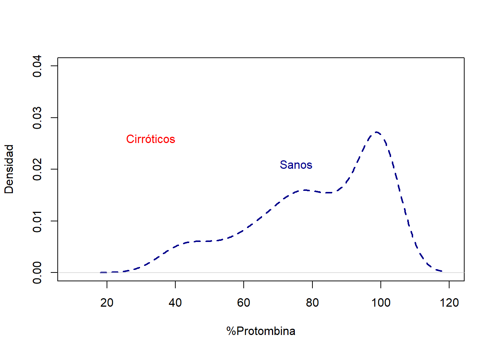

ROC<-function(t, mu_D, mu_D_bar, sigma_D, sigma_D_bar){# pnorm( (mu_D - mu_D_bar) / sigma_D + (sigma_D_bar / sigma_D) * qnorm(t) )pnorm((mu_D-mu_D_bar)/sqrt(sigma_D_bar^2+sigma_D^2))}# Ejemplo de uso con valores específicost<-0.5# Valor del percentilmu_D<-8.5# Media de Dmu_D_bar<-7.5# Media de D_barsigma_D<-0.6# Desviación estándar de Dsigma_D_bar<-0.2# Desviación estándar de D_barROC_value<-ROC(t, mu_D, mu_D_bar, sigma_D, sigma_D_bar)ROC_value
con el metodo binomal siempre que tenemos infor de algo de las respuestas d los dos grupos, no tenemos una estimacion del ara sobre la curva, sino el ara bajo la curva.
en el momento en que tenos que usar infor adicionalo estimar valores, entonces tenemos un area estimada del ara bajo la curva.
en este caso al ser un dato exacto no tenemos IC (que ya que lo ha preguntado una compañera lo apunto)
si tengo estos dos valores y asigno el primero a un no cirro y el segundo a un sí cirrot, mi prob de acercar es 0.4.
elijo dos valores (uno en cada muestra) y asigno el valor mas alto a los enfermo (por defecto los valores mas altos para los casos) entonces la prob de acierto es el area bajo la curva
así interpretaremos también al AUC estimado.
diapo66
ahora casos en lo que solo tenemos informacion muestral
muestra de resultado para casos sanos y muestra de resultados para casos enfermos.
en la muestra correspondiente miro la proporcion de caos que están por encima del punto de corte.
la variable respuesta es un biomarcador con unidades de medida. muchas veces la máquina correspondiente nos da pocos decimales o incluso. estamos chocando con la hipótesis de que es imposible que dos individuos tengan el mismo valor. esto lo veremos reflejado en la curva ROC, ya veremos cómo impacta.
Ejemplo.
supongamos que queremos estimar con el metodo empiricio la curva ROC asociada a un biomarcador y que se ha observado la siguiente muestra de resultados del biomarcador en sanos y enfermos.
Los valores observados se encuentran entre 2 y 7. Asigno c € (0.5, 7.5).
\(1 - \hat{Sp}(7.5) = \text{"proporcion de individuos sanos que tienen valores por encima de _c_."} = 0\)\(1 - \hat{Sp}(7.5) = \text{"proporcion de individuos enfermos que tienen valores por encima de _c_."} = 0\)
¿dónde la distancia vertical es máxima? (0, 2/5) – esto es la estiamcion del indice de youden.
a qué corresponde esa poligonal? a los empates.
si miras la teoria que hay detras de todo esto pues ves que esas cosas dependen de los empates.
el AUC estimado es 0.78, sacado a mano sumando el área de los polígonos del dibujo.
¿los valores observados están en algún sitio en la curva? nop, la curva no representa los valores. si en lugar de números hubieran sido letras ordenadas alfabéticamente hubiera sido el mismo resultado. solo es necesario saber el orden de los valores y saber si los valores se repiten. ni los valores ni el punto del corte a partir del cual decimos que eta enfermo se ve refeljado en la curva roc , a nviel global como se comporta el biomarcador pero no si discrimina o no. para ver si discrimina o no habrá que mirar el AUC, cuanto más esté a 1 mejor sirve para discriminar.
supongamos que c=6 es el imbral de positivos tal que si y ge6 => cuáles son las estiaciones de la sensi y la especi para c=6, sensi = 0.4 y especi = 1
la diapo 67 es el resumen dle método empirico.
Ejemplo.
dist gaussianas distribuciones de tipo beta. dist de tpo gamma
set.seed(602)n<-100Ysan3<-round(rgamma(n, 10, 3), digits=3)Yenf3<-round(rgamma(n, 12, 3), digits=3)roc3<-pROC::roc(controls =Ysan3, cases =Yenf3, partial.auc =c(0,0.2))roc3# pos se supone que debería dar 0.686
Call:
roc.default(controls = Ysan3, cases = Yenf3, partial.auc = c(0, 0.2))
Data: 100 controls < 100 cases.
Partial area under the curve (specificity 0.2-0): 0.197
cambiando la semilla aka cambiando la miestra, las estimaciones de AUC cambian. aumentando el tamaño muestral obvio que tb.
no estaría mal representar histogramas y dist de densidad de los datos meustrales. nos puede dar una idea de si vamos a tener un biomarcador que nos sirva para discriminar o no.
library(pROC)cirroticos<-read.csv("~/Master_Bioestadistica/Simulacion/tema_02/Protom_SanCirr.csv", header=TRUE, sep=";")# Gráfica de las distribuciones en sanos y cirroticosplot(density(cirroticos$X.protombina,na.rm =T),lty=2,lwd=2, xlab="%Protombina",ylab="Densidad",xlim=c(10,120),ylim=c(0,0.04),main="",type="l", col="darkblue")lines(density(cirroticos$cirroticos.sanos,na.rm =T), lty=1,lwd=2, xlab="", col="red")text(80,0.02, "Sanos", col="darkblue", adj=c(1,-.1))text(40,0.025, "Cirróticos", col="red", adj=c(1,-.1))

#Ref: Estimación no paramétrica de la función de densidad. Antonio Miñarro 1998
parece que los sanos tienen valoers superriores a los cirroticos, y eso va al reves de nuestros default. asi que intercambaimos los valores de casos y controles.
los casos siempre son los que tienen mayores valores, en este caso los casos son los sanos.
me parecia anti intiuituvo ese valor de curva roc viendo como se solapan las distribuciones pero sí que es cierto que lo que realmente se solapan son los rangos donde se distribuyen las distribuciones, pero por debajo del punto donde se cortan las distribiciones hay muy poca densidad para los sanos.
diapo74.
Ha dicho algo de nucleos y suavizado.
todo esto viene de que son variables numéricas y muestras que provienen de una variable numérica.
depende de algo y de un ancho de la ventana.
en R nos deja elegir el nucleo pero no la ventana. la ventana tiene alicacion en diagnostico por imagen
tenemos varios métodos para el suavizado. (dapi75)
binormal: toma una aproximacion de la densiadad a una aproximacion normal y toma las aproximaciones de una curva troc con dist binormal y considerando la muestra como una muestra proveniente de una normal con media y varianza que viene de la muestra.
densidad: estimar la densidad de los datos usanod un nucleo que le parezca perfecto (tal cual que ha dicho eso pero npi de qué significa su frase)
fir-distribution: la distriubucions que mejor se aproxima a los datos por el metodo de máxoma verosiiilitud
lognormal: …
el AUC es la misma pq es la que estimamos usando la dist empirica. la normalizada es para dibujar solamente, sirve pq el dibujo es “mas intuitivo”, lo que hace es trazar de una forma mas “estetica” pq es una curva mas continua, y menos poligonal y escaloanda
diapo76.
cómo le pongo un IC a todo esto.
si la muestra pequeña tan solo puedo “repetir el experimento” con muestras bootstrap (respetando el tamaño de las muestras - plural pq tengo muestra de sanos y enfermos).
fijado punto de corte mido sensi para la pd y una especi para la pd, por lo que nuevamente puedo calcular una region de confianza.
con una dimension fija ver cómo variá la otra dimension. “fijada la sensi ver de qué pto a qué pto va la especi”
[aquí ha hecho un dubujito muy boniko que a ver si lo replico.]
diferencia entre bootstrap y la asintotica es muy poca.
Comparación de curvas ROC
lleva emparejado dos biomarcadores en dos muestras pareaadas o no pareadas, dependiendo del tipo de muestras usaremos un tipo de comparación y otra.
El estimador que se suele usar es la diferencia de las AUC, normalizado para tener una distribucion asintotica.
Sean dos pruebas diagnósticas A, B => H0: ROC_A = ROC_B
Si las AUC son diferentes automáticamente tenemos curvas distintas (al revés no)
aparece la supervivencia ya que los sanos
prob acumulada : densidad prob de colas : prob de supervivencia
diapo83
2a.
si miramos las curvas (a parte de los resultados) nos gustaría saber si las consideramos la misma o no
el p value para contrastar la hipotesis es p-value = 0.03075. si hacemos una comparacoin entre dos curvas podemos decir que no son la misma. si usamos DeLongs, el estadistico es diferente con otra dist asintotica pero decimos lo mismo. Y con Venkatraman pues eso.
bootstrap aqui es inutil pq es mecanico y tal… no sé, que computacionalmente no tiene sentido, ¿creo?
para esta especi de 0.9, ¿las dos pruebas me dan sensibilidades que son distintas?
caramba, pvalor 0.2, con lo cual las dos pruebas (partiendo de una especi de 0.9) conducen a la misma sensibilidad. y si aplico bootstrap (para hacerlo al reves, fijando sensi) me dice que no: si fijo sensi de 0.9 no admito que las dos rpeubas tenga la misma especi.
no tengo evidencia que para una especi de 0.9 las dos sensi sean iguales
en diapo85, para una especi de 0.9 se contrasta si la sensi_ = sensi_B. con pvalor 0.2 admito la hipóteis. no tnemos evidencias de que la sensi de ambas pruebas conese nivel de especi sea diferente.
la segunda salida es fijo la sensi a 0.9 y contrasto si la especi de esas dos pruebas coinciden o no. con pvalor infimo puedo descartar que la especi sea igual.
esto es un argumento de autoridad (test y un apoyo teorico que me garantiza las cosas) pero visualmente viendo las curvas ROC debemos tener unas primeras impresiones.
“casualmete” la especi 0.9 es donde se cruzan las curvas ROC, por eso no se pueden diferencias las sensi.
pero cuando voy a mirar la seni 0.9 SÍ que hay diferencias entre as especifi
Elección del punto de corte c
Valor que hace que la pd asigne como positivo o negativo un resultado.
según algún criterio.
a la hora de tener una estimacion del AUC y sobre todo su Ic nos va a dar una pista para decidir qué tipo de prueba tenemos.
AUC – categoria <0.6 – prueba caca y no merece la pensa hacer nada con ella 0.7-0.8 – buena 0.8-0.9 – buena 0.9 - 1 – excelente
si el AUC estimado con sus intervalos del IC es claramente menor a 0.6 la verdad es que podemos obviar esa curva ROC y no hace falta hacer ninguna comparativa con otra (alargar esta frase para resolver todos los casos pero vamos, que está entendido)
diapo87
indice de youden: buscar test que tiene mayor sensi y especi
en otro es buscar que tenga misma sensi y misma especi
en el tercer caso queremos maximizar una de ellas
todas basadas en tener maxima sensi y maxima especi, dentro de lo que ofrece la prueba. si la sensi no sube de 0.6, por más que intentemos maximizarla no podremos (esto no lo entiendo, porque al final si disminuyes el pc debería poder llegar a 1)
diapo89. consideramos positivo si mayor a 37, pero eso no me dice nada sober la prueba. miramos el auc y es 0.74. no puedo descartar esa prueba, ya que con el IC a veces llega a ser buena.
interpretacion de AUC. asignando e mayor de los valores a los enfermos aciertarias estimadamente en el 74 % de las veces pudiendo variasr entre un 66 y un 62.
acierto en una proporcion del 68 %. el ic marca 0.58 qye es muy poco pq 0.5 ya es puro azar y va hasta el 0.77 aunque muy lejos del 1. no pinta bien esta prueba eh
la descriptiva nos hubiera ayudado mucho.
antes estábamos mirando todo junto. ahora separamos entre muejres y hombres.